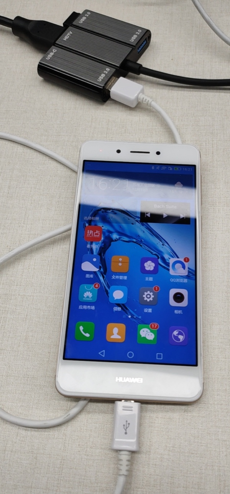
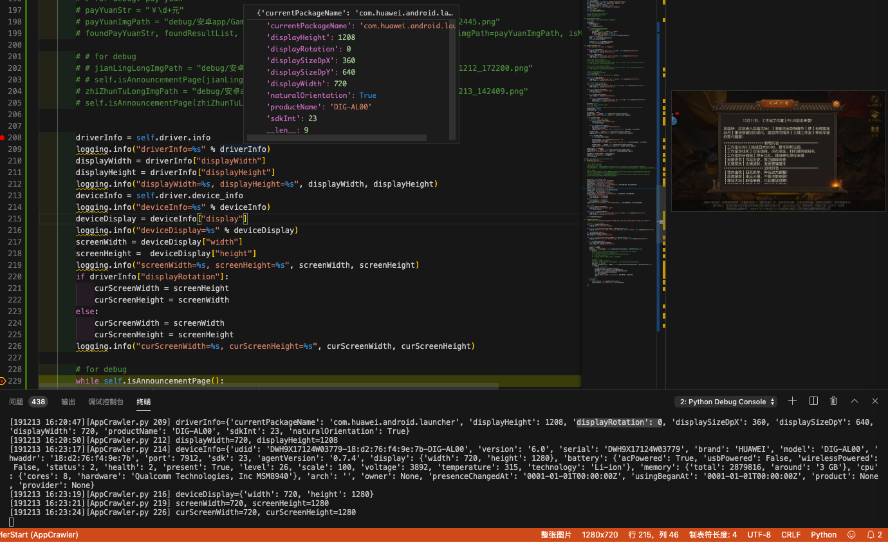

设备相关
此处整理出，和安卓设备相关的一些通用功能的函数和调用举例。
获取安卓设备信息
def getDeviceInfo(self):
return self.driver.device_info
调用：
deviceInfo = self.getDeviceInfo()
logging.info("deviceInfo=%s" % deviceInfo)
输出举例：
# deviceInfo={'udid': '2e2a0cb1-36:59:fa:77:bb:a6-V2065A', 'version': '10', 'serial': '2e2a0cb1', 'brand': 'vivo', 'model': 'V2065A', 'hwaddr': '36:59:fa:77:bb:a6', 'port': 7912, 'sdk': 29, 'agentVersion': '0.9.5', 'display': {'width': 720, 'height': 1600}, 'battery': {'acPowered': True, 'usbPowered': False, 'wirelessPowered': False, 'status': 5, 'health': 2, 'present': True, 'level': 100, 'scale': 100, 'voltage': 4406, 'temperature': 286, 'technology': 'Li-poly'}, 'memory': {'total': 5832196, 'around': '6 GB'}, 'cpu': {'cores': 8, 'hardware': 'Qualcomm Technologies, Inc BENGAL'}, 'arch': '', 'owner': None, 'presenceChangedAt': '0001-01-01T00:00:00Z', 'usingBeganAt': '0001-01-01T00:00:00Z', 'product': None, 'provider': None}
获取(u2)驱动信息
代码：
driverInfo = self.driver.info
logging.info("driverInfo=%s" % driverInfo)
输出举例：
# driverInfo={'currentPackageName': 'com.bbk.launcher2', 'displayHeight': 1459, 'displayRotation': 0, 'displaySizeDpX': 360, 'displaySizeDpY': 800, 'displayWidth': 720, 'productName': 'PD2065', 'screenOn': True, 'sdkInt': 29, 'naturalOrientation': True}
获取安卓版本
def getAndroidVersion(self):
"""返回安卓版本号，float值： 6.0，9.0 """
deviceInfo = self.getDeviceInfo()
logging.debug("deviceInfo=%s" % deviceInfo)
androidVersionStr = deviceInfo["version"] # '6.0'
androidVersionFloat = float(androidVersionStr)
return androidVersionFloat
调用：
curAndroidVersionFloat = self.getAndroidVersion()
ANDROID_VERSION_NEED_RESTART_U2 = 7.0
if curAndroidVersionFloat <= ANDROID_VERSION_NEED_RESTART_U2:
isNeedRestartU2 = True
获取安卓屏幕分辨率
def getCurScreenResolution(self):
"""Get current screen resolution"""
driverInfo = self.driver.info
logging.debug("driverInfo=%s" % driverInfo)
# displayWidth = driverInfo["displayWidth"]
# displayHeight = driverInfo["displayHeight"]
# logging.info("displayWidth=%s, displayHeight=%s", displayWidth, displayHeight)
# deviceInfo = self.driver.device_info
deviceInfo = self.getDeviceInfo()
logging.debug("deviceInfo=%s" % deviceInfo)
deviceDisplay = deviceInfo["display"]
logging.debug("deviceDisplay=%s" % deviceDisplay)
screenWidth = deviceDisplay["width"]
screenHeight = deviceDisplay["height"]
logging.debug("screenWidth=%s, screenHeight=%s", screenWidth, screenHeight)
if driverInfo["displayRotation"]:
curScreenWidth = screenHeight
curScreenHeight = screenWidth
else:
curScreenWidth = screenWidth
curScreenHeight = screenHeight
logging.debug("curScreenWidth=%s, curScreenHeight=%s", curScreenWidth, curScreenHeight)
return (curScreenWidth, curScreenHeight)
调用：
screenWidth, screenHeight = self.getCurScreenResolution()
输出：
[191213 16:16:13][AppCrawler.py 209] driverInfo={'currentPackageName': 'com.zztl.dragon.cs', 'displayHeight': 720, 'displayRotation': 1, 'displaySizeDpX': 640, 'displaySizeDpY': 360, 'displayWidth': 1196, 'productName': 'DIG-AL00', 'sdkInt': 23, 'naturalOrientation': False}
[191213 16:16:13][AppCrawler.py 212] displayWidth=1196, displayHeight=720
[191213 16:16:13][AppCrawler.py 214] deviceInfo={'udid': 'DWH9X17124W03779-18:d2:76:f4:9e:7b-DIG-AL00', 'version': '6.0', 'serial': 'DWH9X17124W03779', 'brand': 'HUAWEI', 'model': 'DIG-AL00', 'hwaddr': '18:d2:76:f4:9e:7b', 'port': 7912, 'sdk': 23, 'agentVersion': '0.7.4', 'display': {'width': 720, 'height': 1280}, 'battery': {'acPowered': True, 'usbPowered': False, 'wirelessPowered': False, 'status': 2, 'health': 2, 'present': True, 'level': 26, 'scale': 100, 'voltage': 3892, 'temperature': 315, 'technology': 'Li-ion'}, 'memory': {'total': 2879816, 'around': '3 GB'}, 'cpu': {'cores': 8, 'hardware': 'Qualcomm Technologies, Inc MSM8940'}, 'arch': '', 'owner': None, 'presenceChangedAt': '0001-01-01T00:00:00Z', 'usingBeganAt': '0001-01-01T00:00:00Z', 'product': None, 'provider': None}
[191213 16:16:13][AppCrawler.py 216] deviceDisplay={'width': 720, 'height': 1280}
[191213 16:16:13][AppCrawler.py 219] screenWidth=720, screenHeight=1280
[191213 16:16:13][AppCrawler.py 226] curScreenWidth=1280, curScreenHeight=720
得到了我们要的：屏幕的宽度和高度
且知道了是当前屏幕是否已旋转（从安卓手机的默认的竖屏，旋转成游戏的横屏）了
另外，当屏幕故意不去旋转，回到默认竖屏后：

此时
- 旋转为
FalsedisplayRotation:0naturalOrientation:True
- 但
displayHeight值有变化：是1208- 却不是
1280
- 却不是
如图：

详细log：
[191213 16:20:47][AppCrawler.py 209] driverInfo={'currentPackageName': 'com.huawei.android.launcher', 'displayHeight': 1208, 'displayRotation': 0, 'displaySizeDpX': 360, 'displaySizeDpY': 640, 'displayWidth': 720, 'productName': 'DIG-AL00', 'sdkInt': 23, 'naturalOrientation': True}
[191213 16:20:50][AppCrawler.py 212] displayWidth=720, displayHeight=1208
[191213 16:23:17][AppCrawler.py 214] deviceInfo={'udid': 'DWH9X17124W03779-18:d2:76:f4:9e:7b-DIG-AL00', 'version': '6.0', 'serial': 'DWH9X17124W03779', 'brand': 'HUAWEI', 'model': 'DIG-AL00', 'hwaddr': '18:d2:76:f4:9e:7b', 'port': 7912, 'sdk': 23, 'agentVersion': '0.7.4', 'display': {'width': 720, 'height': 1280}, 'battery': {'acPowered': True, 'usbPowered': False, 'wirelessPowered': False, 'status': 2, 'health': 2, 'present': True, 'level': 26, 'scale': 100, 'voltage': 3892, 'temperature': 315, 'technology': 'Li-ion'}, 'memory': {'total': 2879816, 'around': '3 GB'}, 'cpu': {'cores': 8, 'hardware': 'Qualcomm Technologies, Inc MSM8940'}, 'arch': '', 'owner': None, 'presenceChangedAt': '0001-01-01T00:00:00Z', 'usingBeganAt': '0001-01-01T00:00:00Z', 'product': None, 'provider': None}
[191213 16:23:19][AppCrawler.py 216] deviceDisplay={'width': 720, 'height': 1280}
[191213 16:23:21][AppCrawler.py 219] screenWidth=720, screenHeight=1280
[191213 16:23:24][AppCrawler.py 226] curScreenWidth=720, curScreenHeight=1280
详见：
【已解决】uiautomator2获取当前屏幕的宽和高即屏幕大小分辨率信息